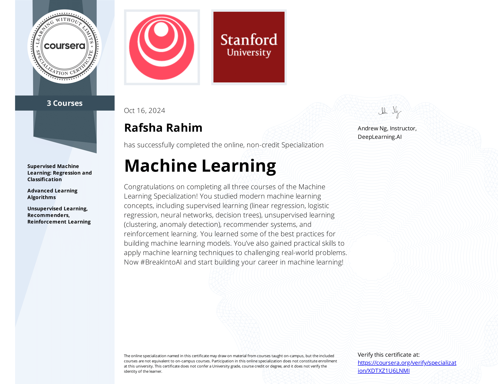
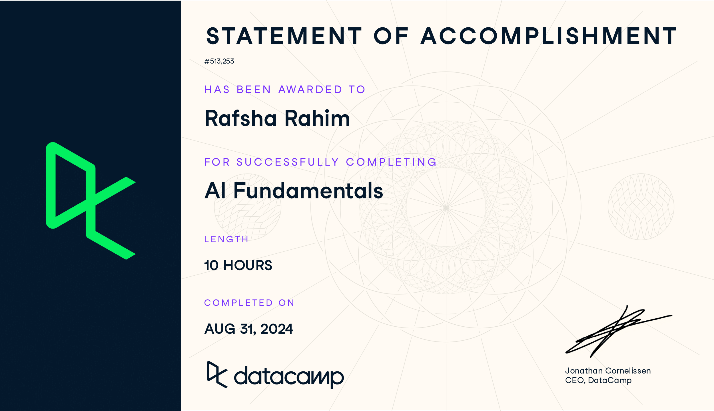
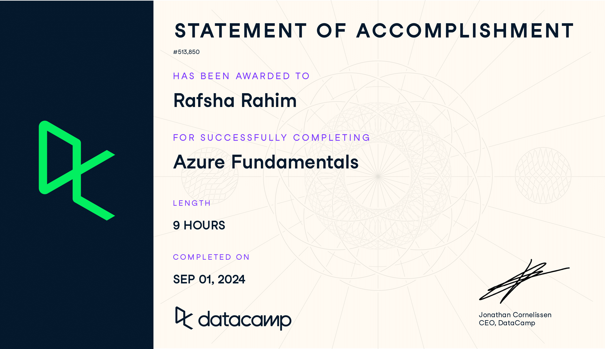
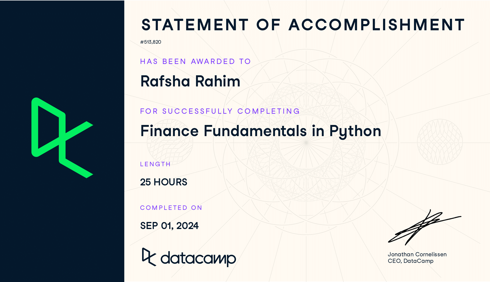
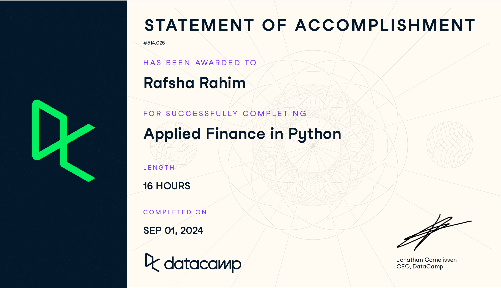

Certifications
1. Machine Learning Specialization – Stanford Online, DeepLearning.AI
Description: Completed a series of specialized courses in Machine Learning and Deep Learning, focusing on various techniques and algorithms. Gained practical experience in building and training machine learning models using NumPy and scikit-learn for regression and classification tasks, as well as advanced algorithms for decision trees and ensemble methods. Developed skills in neural network architecture using TensorFlow for multi-class classification, and applied unsupervised learning techniques, including clustering and anomaly detection. Additionally, created recommender systems using collaborative filtering and deep learning approaches, and explored deep reinforcement learning principles. This training has equipped me with the foundational knowledge and hands-on experience necessary for effective machine learning model development.
2. Python Data Fundamentals – DataCamp
Description: Comprehensive course covering core Python concepts, data manipulation, and analysis with popular libraries like Pandas and NumPy.

3. AI Fundamentals – DataCamp
Description: Introductory course on artificial intelligence, machine learning algorithms, and their practical applications in various industries.
4. Azure Fundamentals – DataCamp
Description: Overview of cloud computing principles and services using Microsoft Azure, including storage, databases, and virtual machines.
5. Finance Fundamentals with Python – DataCamp
Description: Course focusing on financial data analysis using Python, covering topics like time-series analysis, risk, and return calculations.
6. SQL Fundamentals – DataCamp
Description: In-depth introduction to SQL, querying databases, and manipulating data efficiently with advanced SQL techniques. Also includes experience with PostgreSQL for managing and interacting with relational databases.

7. Applied Finance with Python – DataCamp
Description: Applied finance course teaching real-world applications of Python in financial markets, portfolio analysis, and data-driven decision-making.
